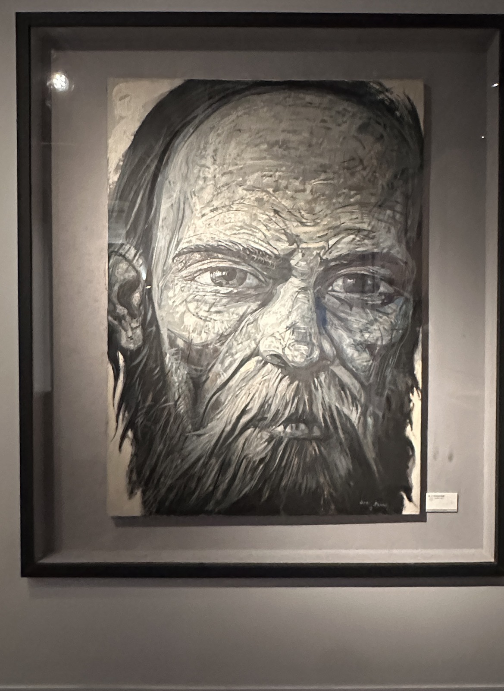
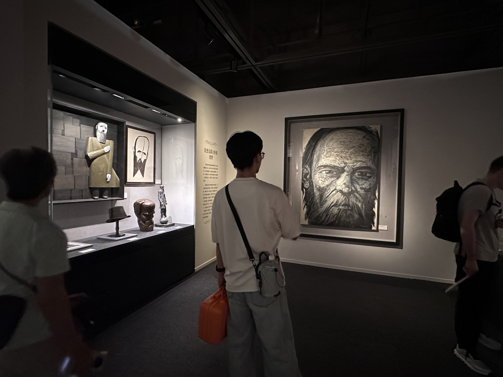

文学地位
与托尔斯泰并列为19世纪俄国小说最具世界影响力的作家之一。他对20世纪存在主义、心理小说和现代主义产生了巨大影响。
一个把小说写成精神审判室的人：他不断把人物逼到贫困、犯罪、欲望、羞耻、信仰和死亡的边缘，然后追问——人在真正自由的时候，究竟会做出什么？

陀思妥耶夫斯基是19世纪俄国小说家。他真正特殊的地方，不是“会写心理”，而是能让互相冲突的思想在人物身上获得生命：理性主义者、信徒、虚无主义者、罪犯、圣徒、赌徒，都不是作者手里的纸片人。
与托尔斯泰并列为19世纪俄国小说最具世界影响力的作家之一。他对20世纪存在主义、心理小说和现代主义产生了巨大影响。
自由意志、罪责、苦难、信仰、虚无主义、人的自我欺骗，以及人在道德极限处是否仍然有选择。
他的小说常常嘈杂、过热、失控。人物不断争辩、忏悔、翻供、羞辱自己，也羞辱别人。形式上的“不稳定”恰恰是内容的一部分。
他的思想不能脱离监禁、假处决、苦役、疾病、债务与赌博来理解。
父亲是医生。后来他进入圣彼得堡军事工程学校受训，但很快放弃工程职业，转向文学。
处女作让他迅速受到批评界关注，但此后的作品并未持续获得同等赞誉。
他因参与彼得拉舍夫斯基小组的讨论活动被捕。临刑前，死刑被改为苦役与军役。这不是文学传说，而是他人生的核心断裂点。
四年西伯利亚苦役让他长期与普通罪犯共同生活，改变了他对知识分子、人民、罪犯、信仰和政治乌托邦的看法。
《地下室手记》《罪与罚》《赌徒》相继出现。他本人长期受到癫痫发作、债务和赌博问题困扰。
安娜既是妻子，也是速记员、出版事务管理者。她对稳定他的生活和事业极其重要。
这是他思想与小说艺术的集大成之作；次年，他在圣彼得堡去世。

《地下室手记》最尖锐的攻击之一，就是针对“只要算清利益，人便会理性行动”的想法。陀思妥耶夫斯基认为，人甚至可能故意伤害自己，只为了证明自己不是可以被公式预测的机器。
他的作品反复测试一个危险问题：如果没有终极意义、上帝或永恒审判，道德义务究竟靠什么成立？他并没有通过简单说教解决它，而是让人物把问题活出来。
在他那里，犯罪往往不只是获取利益，而是测试边界。罪犯既想逃脱惩罚，又想被发现、被审判，甚至渴望通过承认罪责重新获得与他人的联系。
他的答案不是“苦难自动使人高尚”。苦难同样可以把人变得残酷、卑劣或自毁。真正关键的是，人如何回应苦难。
如果人拥有真正自由，就意味着人可以拒绝合理、幸福、秩序甚至救赎。自由因此不只是权利，也是一种可怕的负担。
他本人倾向东正教信仰与保守立场，但他笔下最强大的怀疑者往往并不弱。正因为反方被写得足够强，他的宗教小说才没有沦为宣传册。
一个极端自觉、极端怨恨、又极端无力的人向世界宣战。篇幅短，却包含陀氏最重要的“反理性主义”问题。
自由意志自我羞辱现代主体大学生拉斯柯尔尼科夫为了验证自己的“非凡人物”理论而杀人。真正精彩的并非侦破，而是一个理论如何在人的身体、恐惧与良知中崩塌。
犯罪罪责救赎陀思妥耶夫斯基试图把一个近乎基督式的“绝对善人”放进现实社会，观察善是否真的能够拯救周围的人。结果比想象中黑暗得多。
纯真欲望毁灭政治思想、阴谋、革命组织和人格虚无纠缠在一起。这是他最强烈的政治小说，也是理解他对激进主义恐惧的关键。
政治虚无主义暴力父子冲突、弑父疑案、欲望、信仰与怀疑被压缩到一个家庭。伊万的反叛、“宗教大法官”章节，以及阿辽沙的信仰共同构成陀氏思想的最高密度区域。
信仰恶的问题自由后来巴赫金用“复调小说”来描述陀思妥耶夫斯基：重要人物并非单纯替作者说话，而是拥有相对独立的意识与价值立场。
一个思想并不是抽象论证，而会变成某个人的口气、欲望、疾病、经济处境与行动。
葬礼、审判、酒馆、逼债、求婚、谋杀前后——他偏爱让人物在无法维持体面的地方说真话。
他经常让一个强论点遭遇另一个同样强的论点。小说因此不是作者给答案，而像实验室：看人在观念中会发生什么。
他的后期政治思想明显保守，并带有俄国民族主义和斯拉夫主义倾向；《作家日记》等非虚构文字中还存在严重的反犹表达。这些不能用“时代局限”四个字轻轻带过。
从形式上看，他的小说也并不总是“精致”：结构会失衡，人物会长篇演说，情节会夸张到近乎肥皂剧。
因为他的伟大并不依赖于“政治上永远正确”或“结构永远完美”。他的核心能力，是把一个观念追到它在人身上最危险的后果，并允许反对自己的声音在小说里变得强大。
换句话说：你可以反对陀思妥耶夫斯基的答案，但很难绕过他提出的问题。
最适合作为入口。故事推动力强，同时几乎囊括他最典型的罪责、思想实验与救赎结构。
读完《罪与罚》再读，会更容易看懂他为什么如此不信任“理性会自动让人变好”这种乐观主义。
想研究善与毁灭，读《白痴》；想研究政治极端主义与虚无主义，读《群魔》。
最后读。它不是因为“最难”才放最后，而是因为读过前面的作品之后，你会听见其中更多回声。